The library is the set of functions that we need to use within R
library(readxl)
library(ggplot2)
library(tidyverse)
library(gridExtra)
library(shiny)
library(plotly)
library(reshape2)
library(factoextra)
library(NbClust)In this demo I use the Iris dataset.
This famous (Fisher’s or Anderson’s) iris data set gives the measurements in centimeters of the variables sepal length and width and petal length and width, respectively, for 50 flowers from each of 3 species of iris. The species are Iris setosa, versicolor, and virginica.
dt = iris
p1 <- ggplot(data = dt, aes(x=Petal.Width,y=Petal.Length, color = Species))+geom_point()+
labs(title = "Original Dataset")
p1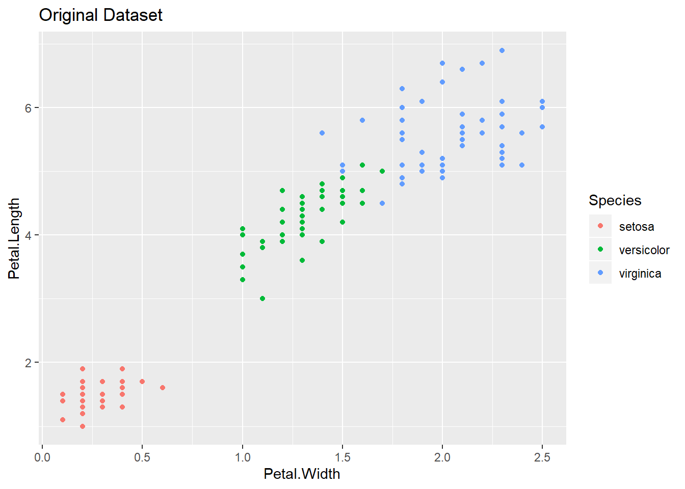
dt.kmean <- dt %>% select(Petal.Width,Petal.Length) #select the data for clustering
fviz_nbclust(dt.kmean,kmeans, method = "wss") + labs(subtitle = "Elbow method")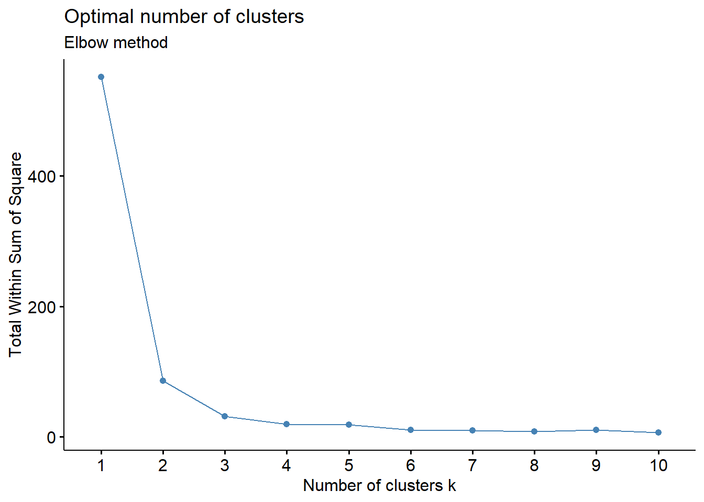 + from the optimization we found that 3 is the best number for cluster in this dataset
set.seed(619)
k_mean <- kmeans(dt.kmean,3, nstart = 30)
dt_plot <- cbind(dt,k_mean$cluster)
p2 <- ggplot(data = dt_plot, aes(x=Petal.Width,y=Petal.Length, color = factor(k_mean$cluster)))+geom_point()+
labs(title = "Results from k-mean", color = "cluster from k-mean")
p2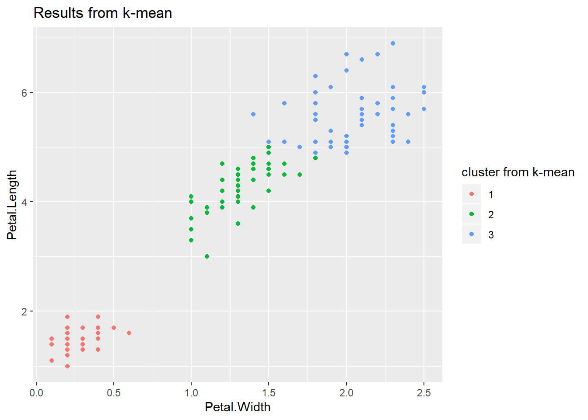
grid.arrange(p1,p2, nrow = 1)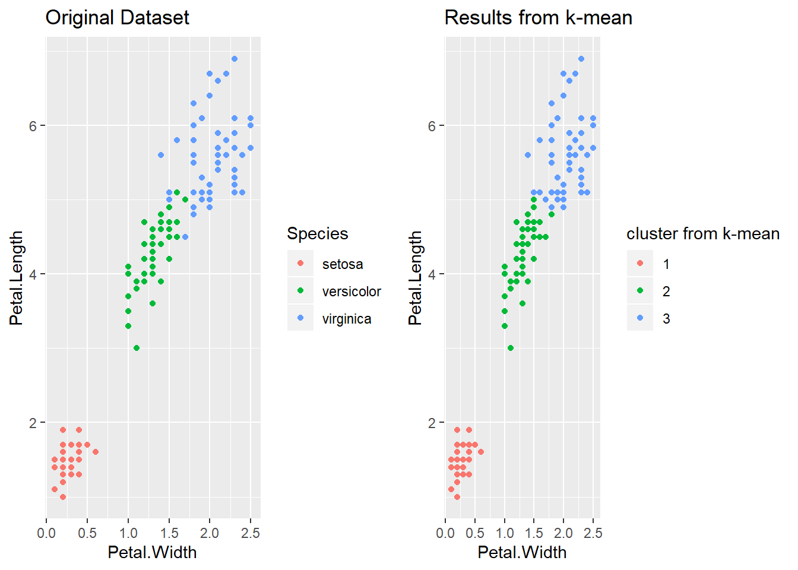
p3 <- ggplot(data = dt, aes(x=Sepal.Width,y=Sepal.Length, color = Species))+geom_point()+
labs(title = "Original Dataset")
p3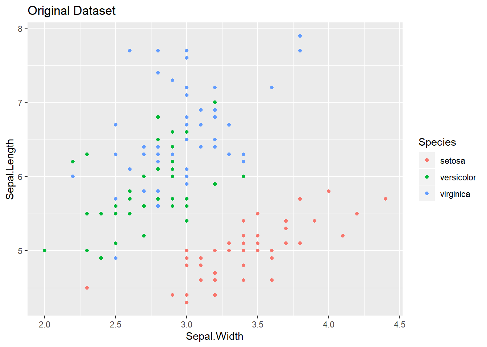
dt.kmean <- dt %>% select(Sepal.Width,Sepal.Length)
set.seed(619)
k_mean <- kmeans(dt.kmean,3, nstart = 30)
dt_plot <- cbind(dt,k_mean$cluster)
p4 <- ggplot(data = dt_plot, aes(x=Sepal.Width,y=Sepal.Length, color = factor(k_mean$cluster)))+geom_point()+
labs(title = "Results from k-mean", color = "cluster from k-mean")
p4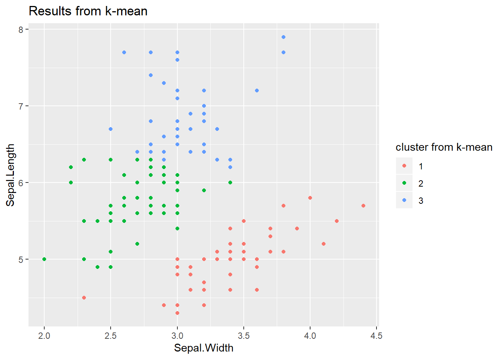
grid.arrange(p3,p4, nrow = 1)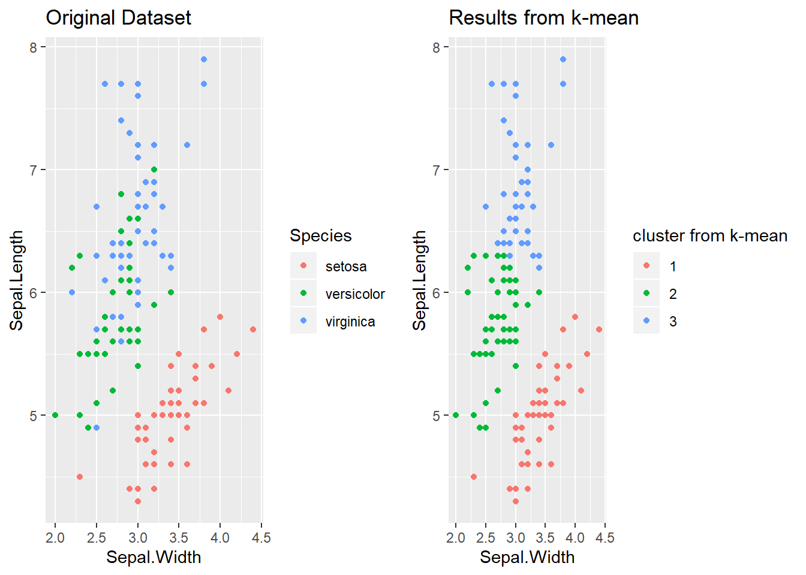
grid.arrange(p1,p2,p3,p4, nrow = 2)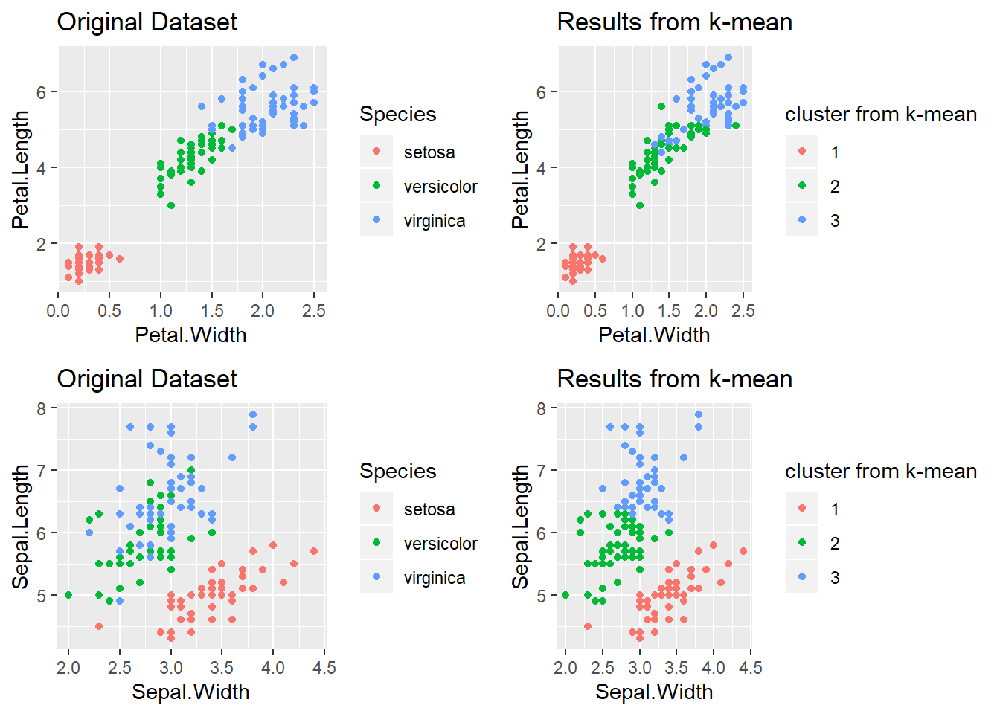
library(RCurl)## Loading required package: bitops##
## Attaching package: 'RCurl'## The following object is masked from 'package:tidyr':
##
## completegit.url <- getURL("https://raw.githubusercontent.com/nheeren/material_intensity_db/master/data/buildings.csv")
mi.data <- read.csv(text = git.url)mi.data[1:10,2:10]## Country Region construction_period_start construction_period_end
## 1 Austria Vienna NA 1918
## 2 Austria Vienna NA 1918
## 3 Austria Vienna NA 1918
## 4 Austria Vienna NA 1918
## 5 Austria Vienna NA 1918
## 6 Austria Vienna NA 1918
## 7 Austria Vienna NA 1918
## 8 Austria Vienna NA 1918
## 9 Austria Vienna NA 1918
## 10 Austria Vienna NA 1918
## steel copper aluminum unspecified_metal wood
## 1 3.414460 0.1628582 0.47809053 0.18171365 68.17187
## 2 8.300614 0.2421979 0.07332111 0.03097744 89.49143
## 3 15.273336 0.2001163 0.06058164 0.02559514 68.39522
## 4 11.111311 0.2569017 0.07777240 0.03285807 48.21288
## 5 11.292124 0.2661166 0.32976127 0.03403667 32.39746
## 6 19.909349 0.2171249 0.06573071 0.02777057 46.84368
## 7 8.157953 0.2178407 0.06594740 0.02786212 22.84301
## 8 7.111178 0.2214064 0.06702685 0.02831818 75.28328
## 9 10.424038 0.2689137 0.21109662 0.03439442 68.69549
## 10 8.504805 0.2110020 0.06387710 0.02698744 34.09962msiinR <- read_excel("./data/msiinR.xlsx") ## @mainfile for MI modified from github## New names:
## * `` -> ...1msiinR[1:10,3:10]## # A tibble: 10 x 8
## Country Region construction_pe~ construction_pe~ steel copper aluminum
## <chr> <chr> <dbl> <dbl> <dbl> <dbl> <dbl>
## 1 Austria Vien0 0 1918 3.41 0.163 0.478
## 2 Austria Vien0 0 1918 8.30 0.242 0.0733
## 3 Austria Vien0 0 1918 15.3 0.200 0.0606
## 4 Austria Vien0 0 1918 11.1 0.257 0.0778
## 5 Austria Vien0 0 1918 11.3 0.266 0.330
## 6 Austria Vien0 0 1918 19.9 0.217 0.0657
## 7 Austria Vien0 0 1918 8.16 0.218 0.0659
## 8 Austria Vien0 0 1918 7.11 0.221 0.0670
## 9 Austria Vien0 0 1918 10.4 0.269 0.211
## 10 Austria Vien0 0 1918 8.50 0.211 0.0639
## # ... with 1 more variable: unspecified_metal <dbl>mi_all <- msiinR %>% dplyr::select(construction_period_end,other_minerals,metal_based,biomass_based,construction_mineral,wood,brick,concrete,aggregates,TotalMSI,Country)%>%
filter(construction_period_end >0)#plot the MI by year and main selected material categories#
p_mi_1 <- mi_all %>% melt(id = c("construction_period_end","Country")) %>% ggplot(aes(x=construction_period_end,y=value,color=variable))+ geom_point()+ geom_smooth(method = "lm")
p_mi_1## Warning: Removed 349 rows containing non-finite values (stat_smooth).## Warning: Removed 349 rows containing missing values (geom_point).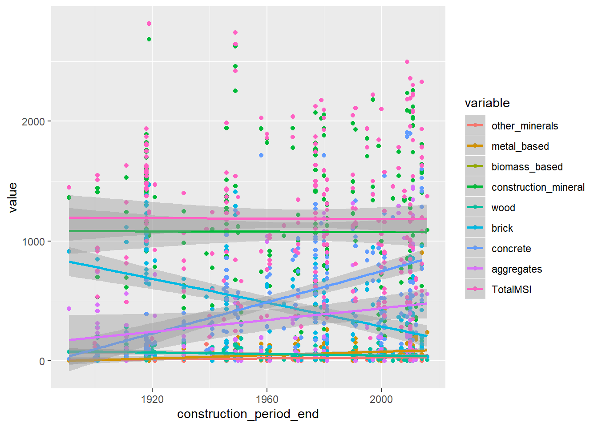
#plot the MI by year and countries#
p_mi_2 <- mi_all %>% melt(id = c("construction_period_end","Country")) %>% ggplot(aes(x=construction_period_end,y=value,color=Country))+ geom_point()+ geom_smooth(method = "lm")
p_mi_2## Warning: Removed 349 rows containing non-finite values (stat_smooth).## Warning: Removed 349 rows containing missing values (geom_point).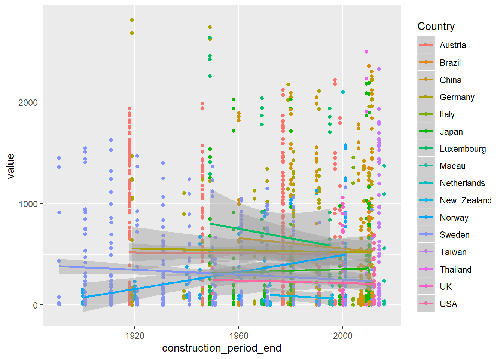
grid.arrange(p_mi_1, p_mi_2, nrow = 2)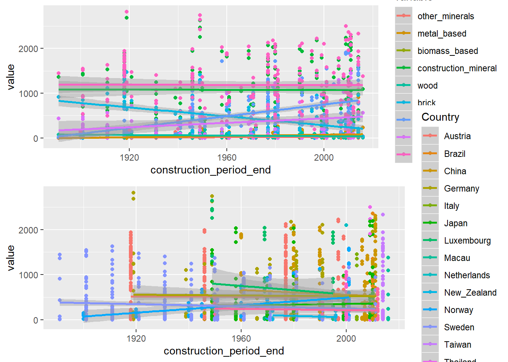
msi.res.only <- msiinR %>% filter(Occupation == "residential") ## @ filter only residential building
## select main materials categories ##
data_for_kmean <- msi.res.only %>% dplyr::select(metal_based,biomass_based,construction_mineral,other_minerals,brick,concrete,aggregates,TotalMSI)
## fill NA with 0, to avoid error in k mean clustering ##
data_for_kmean[is.na(data_for_kmean)] <- 0#### Determine the number of k clustering ####
fviz_nbclust(data_for_kmean,kmeans, method = "wss") + labs(subtitle = "Elbow Method")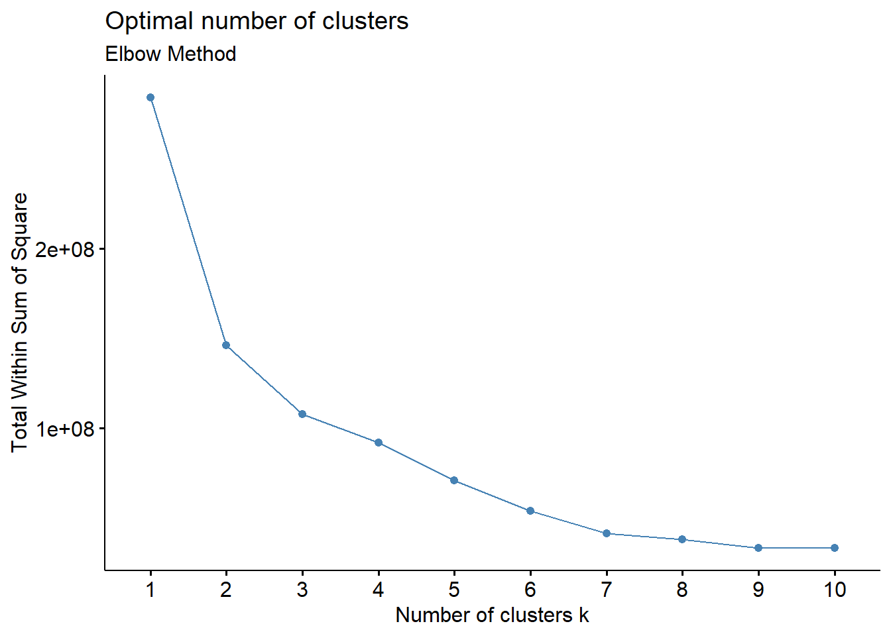
## run for difference k value ##
set.seed(1)
k4 <- kmeans(data_for_kmean, 4, nstart = 30) ## k = 4
set.seed(1)
k5 <- kmeans(data_for_kmean, 5, nstart = 30) ## k = 5
set.seed(1)
k6 <- kmeans(data_for_kmean, 6, nstart = 30) ## k = 6
set.seed(1)
k7 <- kmeans(data_for_kmean, 7, nstart = 30) ## k = 7## plot clustering ##
p1 <- fviz_cluster(k4, geom = "point" , data_for_kmean) + ggtitle("k=4")
p2 <- fviz_cluster(k5, geom = "point" , data_for_kmean) + ggtitle("k=5")
p3 <- fviz_cluster(k6, geom = "point" , data_for_kmean) + ggtitle("k=6")
p4 <- fviz_cluster(k7, geom = "point" , data_for_kmean) + ggtitle("k=7")
plot_clus_1st <- grid.arrange(p1,p2,p3,p4)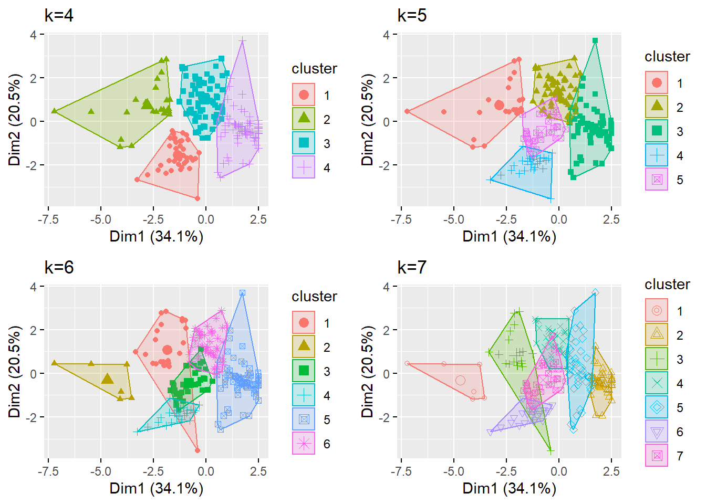
set.seed(1)
k_final <- kmeans(data_for_kmean, 7, nstart = 30) ## @choose k value based on the optimal result
k_final_data <- cbind(msi.res.only,k_final$cluster) ## @bind cluster class into msi.res.only dataset
colnames(k_final_data)[82] <- "cluster.id" ## @change variable name ##
k_final_selected_data <- k_final_data %>% dplyr::select(Country,building_description,82,metal_based,biomass_based,construction_mineral,other_minerals,brick,concrete,aggregates,TotalMSI)#Data file for final results#
final <- k_final_datadt <- final %>% dplyr::select(construction_period_end,other_minerals,metal_based,biomass_based,construction_mineral,wood,brick,concrete,aggregates,TotalMSI,cluster.id)%>%
filter(construction_period_end >0)
colnames(dt)[1] <- "year"
dt.melt <- dt %>% melt(id = c("year","cluster.id"))
dt.sum <- dt.melt %>% group_by(year,cluster.id,variable) %>% summarise(value = mean(value))
plot_by_cluster <- dt.sum %>% ggplot(aes(x = year, y = value, color = factor(variable))) + geom_point()+
geom_smooth(method = "lm")+ facet_wrap(.~ cluster.id)#,scales = "free")
plot_by_cluster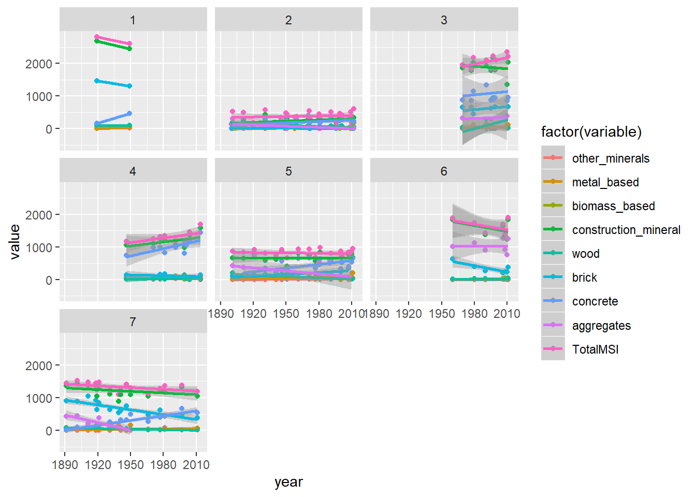
# Plot the histogram of MI for all clusters
fit.msi.dat <- final %>% dplyr::select(other_minerals,metal_based,biomass_based,construction_mineral,wood,brick,concrete,aggregates,TotalMSI,Country,cluster.id)
fit.msi.dat %>% melt() %>% ggplot(aes(x=value))+geom_histogram(aes(y=..density..,fill=..count..), alpha=.75) +
geom_density(aes(color = "red"))+
facet_wrap(.~ variable, scales = "free")+
scale_fill_gradient("Count", low = "blue", high = "red")+
guides(color = F)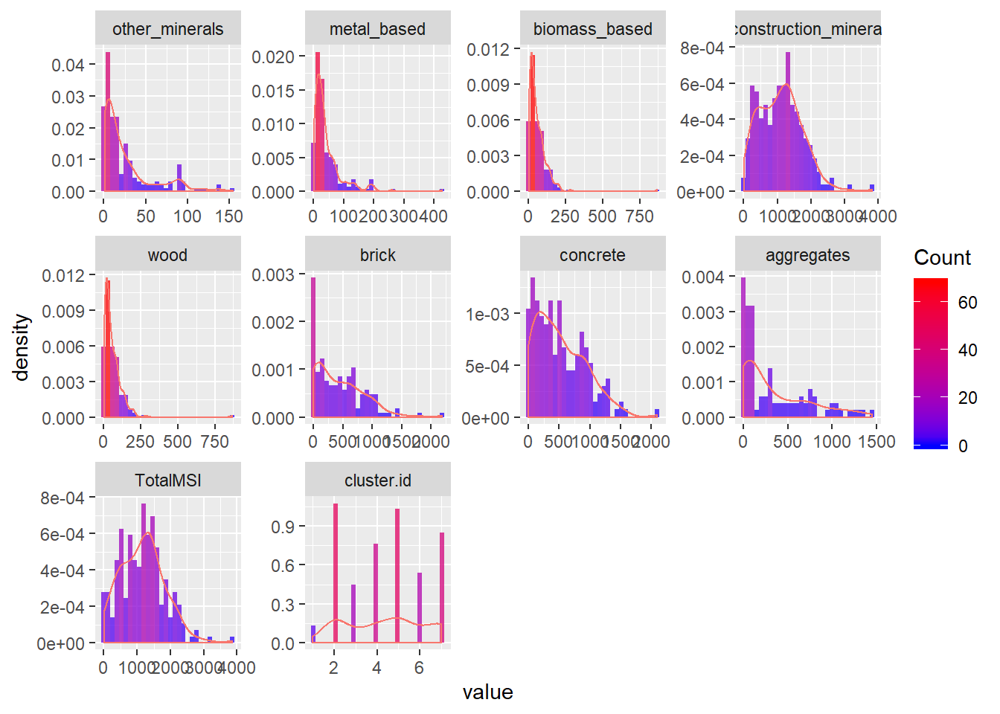